# 非参数估计
# 引言
最大似然方法和贝叶斯估计均属于参数估计方法：待估计的概率密度函数的形式是已知的，只是利用 样本来估计函数中的某些参数。
但是，在很多情形下，我们对样本的分布并没有充分 的了解，无法事先给出密度函数的具体形式，而且有 些样本的分布也很难用简单的函数来描述。在这些情 形下，就需要用非参数方法。
非参数估计方法不需要对概率密度函数的形式作任何假设，而是直接用样本估计出整个函数。
# 密度估计
# 直方图方法
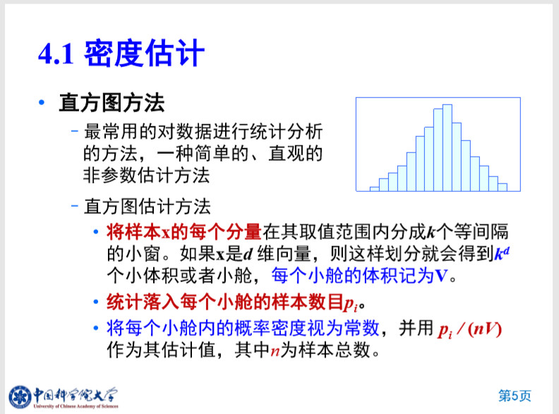# 非参数估计的基本原理
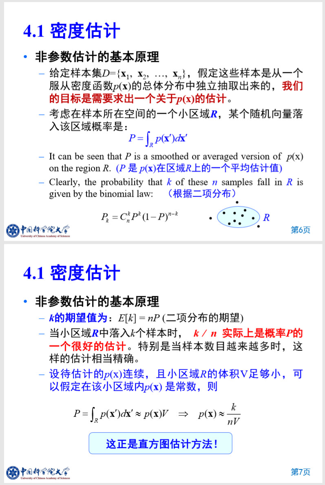# 密度估计问题
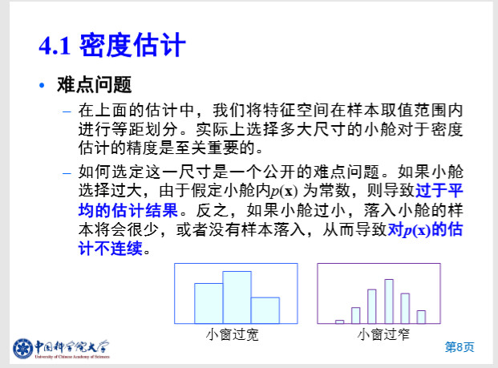解决方案：
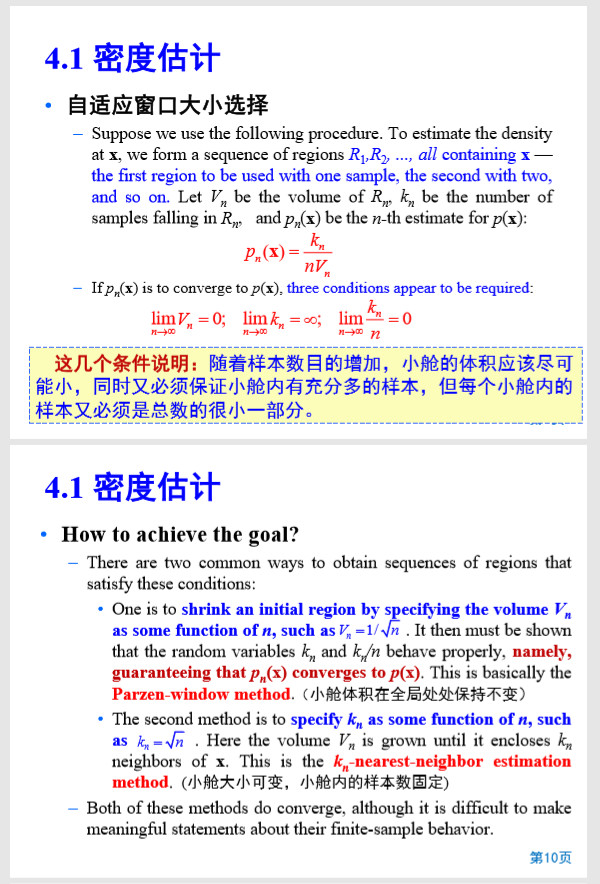# Parzen窗方法（帕尔森窗）
Parzen 窗是固定局部区域体积，变化落入区域
# 方法流程
- 确定局部区域体积，并引入单位方窗函数

根据方窗函数，计算落入以为中心，体积为的区域样本总数
计算该点处概率密度
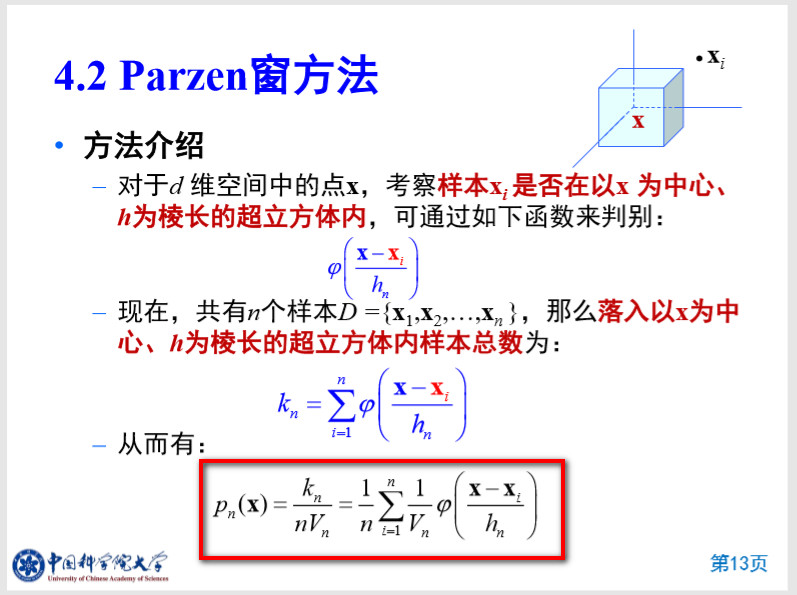
若要使得为概率密度函数，基本条件为：
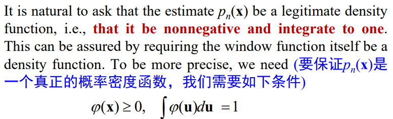证明过程：
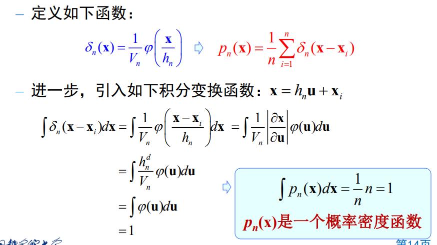
# 影响因素
窗宽

窗函数

# 算法特点
- 适用范围广，无论概率函数是规则的或者是不规则的、 单峰的还是多峰的；
- 但该方法要求样本的分布较好，且数量要大；
- 选择合适的窗口函数将有利于提高估计的精度和减少样本的数量。
- 与直方图仅仅在每个小窗内估计平均密度，Parzen窗用滑动的小窗来估计每个点上的概率密度。
# 案例
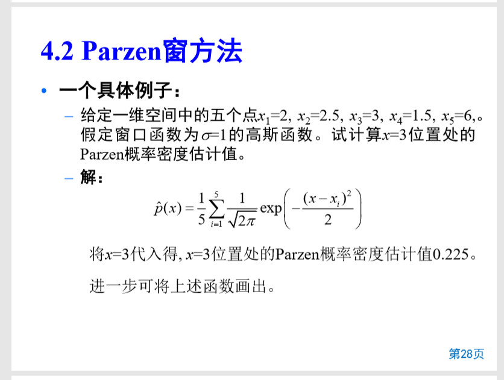# K近邻估计
# 引言
在Parzen窗估计方法中，小窗的体积被视为样本个数的函数，比如。
但是存在一些问题：
- 当选择太小，导致大部分区域是空的，会使得不稳定。
- 当选择得太大，则会变得较平坦，从而失去一些重要的空间变化。
而近邻估计方法是克服这一问题的一个可能方法。
# 基本思想
固定局部样本数，变化。
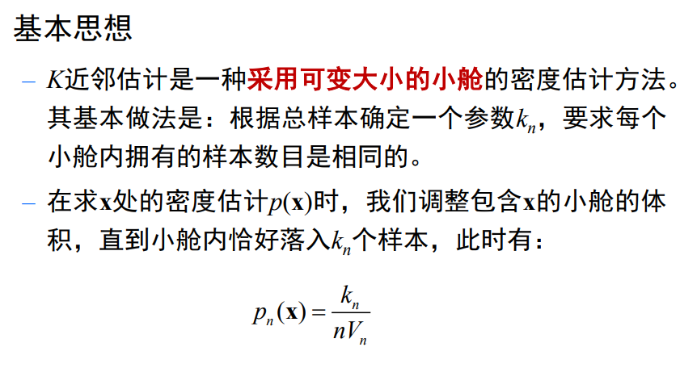# 方法流程
确定固定局部样本数和概率密度计算公式
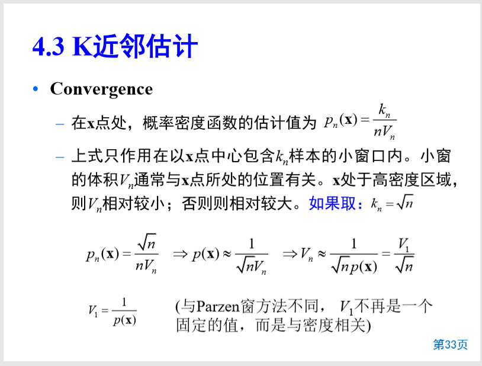根据在点最近邻样本，计算体积
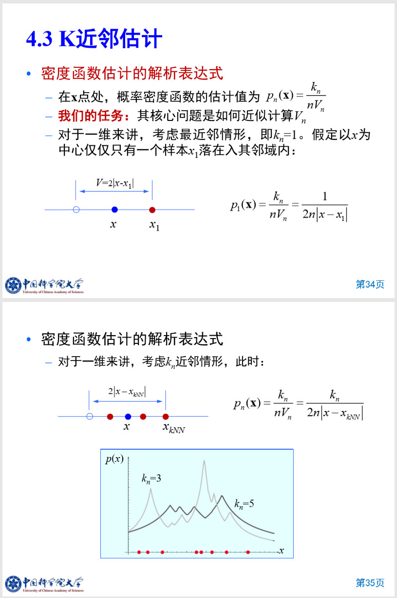 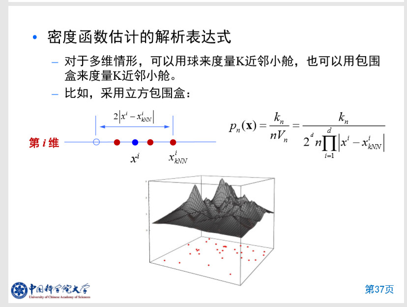
基本条件
# 案例
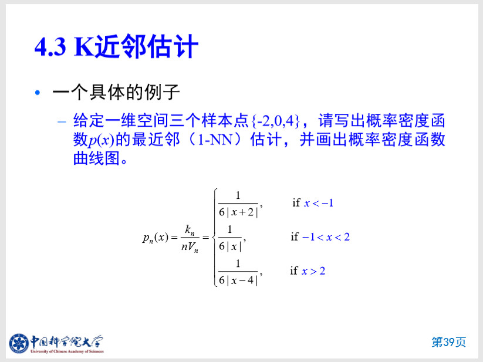P窗掌握，原理，案例
K近邻估计掌握，原理，案例
# K近邻分类器
# 引言
从后验概率角度来分析K近邻估计，可以得到K近邻分类器。
在K近邻估计中，在处，体积为的小舱内，有个样本，每个样本都带有一个标签。那么，我们可以得到关于属于标签的概率为：
由于，可继续推导其式为：
w_m = arg \ \underset{i}{max} \ \{ p_n(w_i|x) \}
这个就是K近邻分类器。
# 基本思想
对于一个新样本，将其与已知样本逐一进行比较，找出距离新样本最近的已知样本，以该样本的类别作为新样本的类别。
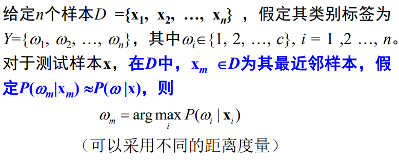# 判别函数
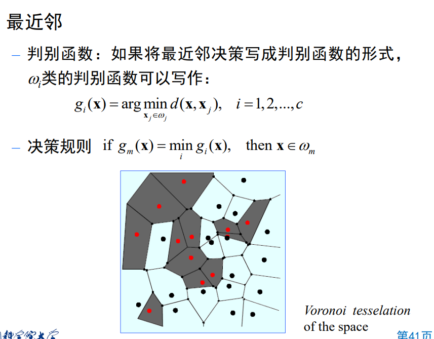# 最近邻错误率分析
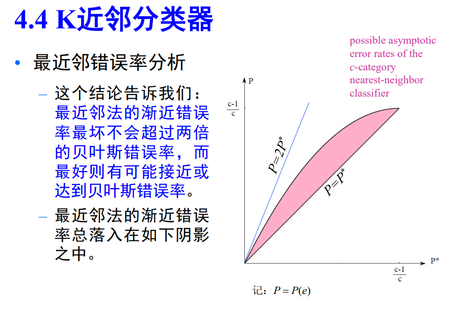# 优化和改进
优化
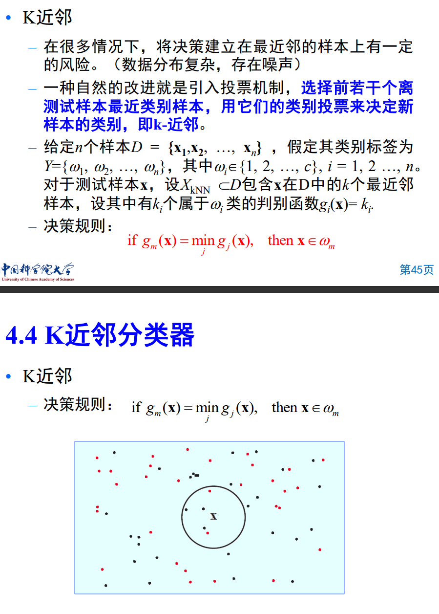改进
- 剪辑近邻法
- 压缩近邻法
# 案例